الصيانة الدورية بعد 10 ساعات تشغيل :
1-التأكد بالنظر من الضغط داخل الاطارات ومن جميع الوصلات :-
- راجع الضغط داخل الاطارات وفقا لمقاس الاطار جدول (2) وحسب نوع التربة و يؤخذ عادة الضغط للاطار الخلفي 8-1،4 بار (كجم/سم2) و ضغط العجل الامامي 8 – 3 بار (كجم/سم2) و يمكن الحكم على مناسبة ضغط العجل من خلال الشكل المرفق (2) .
- في حالة الدفع بأربع عجلات (دفرنشين) يكون ضغط الامامي = الخلفي حيث يتساوى مقاس العجلات الامامية والخلفية .
- حافظ على الاطارات من التلوث بالوقود او الشحوم او الزيوت لحمايتها من التلف .
- تجنب السير فوق الاشياء الصلبة مثل الصخور او الاجزاء القاطعة .
- اذا تلوثت العجلات اثناء رش المبيدات تغسل جيدا بالماء .
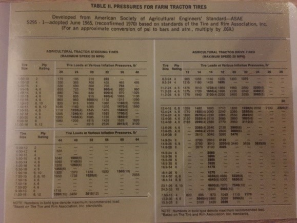

2- الكشف عن مستوى الزيت في علبة المرفق بالمحرك:
- راجع منسوب الزيت بواسطة العصا الموضحة بالشكل المرفق(3) ويتم قياس هذا المنسوب بعد مرور )10دقائق (من توقف المحرك عن العمل حيث يجب ان يكون الجرار في وضع افقي تماما .
- اذا كان مستوى الزيت اسفل العلامة السفلى ضف كمية كافية من الزيت ذو اللزوجة الموصى بها للوصول الى الحد المسموح به .
- لا تشغل المحرك عندما يكون منسوب الزيت اقل من العلامة السفلى .

3-الكشف عن منسوب ماء التبريد في المشع (الرادياتير )
- لا تنزع غطاء المشع الا اذا كان المحرك بارد .
- بعد ان يبرد المشع فك الغطاء لفة قصيرة ليتم التخلص من الضغط ان وجد ثم انزع الغطاء تماما .
- حافظ على منسوب السائل في منتصف المسافة بين قلب المشع و رقبة الملء او ان يكون منسوب الماء اسفل فتحة الملء بحوالي 3 سم .
4-تشحيم المحور الامامي و العجلات الامامية .
- نظف مآخذ الشحم و استبدل التالف منها .
- ضع اللي الخاص بالمشحمة راسيا على نبل (فتحة) التشحيم
- اضغط على ذراع المشحمة عدة مرات حتى يخرج الشحم السابق (اسود اللون ) كما في الشكل الملحق .
- يشمل هذا التشحيم النقاط الاتية :- كرسي المحور الامامي-مفصل وصلة –قضيب القيادة-مفصل القضيب الواصل – الدواليب الامامية – دواسة الفرامل –دواسة القابض .


5-فحص المرشح الابتدائي للوقود .
- يجب تنظيف الكوب الزجاجي كلما تجمعت رواسب ترابية او مياه في قاعه .
- تاكد من عدم وجود تسريب للوقود من خلال الجوانات .
- استنزف الهواء من دورة الوقود قبل ادارة المحرك بواسطة الصامولة المخصصة للتنقيب .
- يجب ملء خزان الوقود في نهاية كل يوم لمنع تجمع بخار الماء داخل المرشح الابتدائي .
- راجع الاشكال الملحقة .
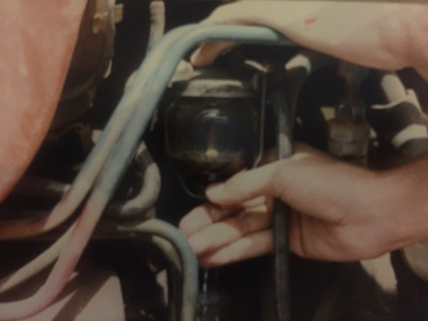
6- تنظيف فلتر الهواء :-
- اذا كان الفلتر مملوء بالتراب يستخدم هواء مضغوط للتخلص من الغبار بإدخال فوهة النفخ داخل الفلتر كما موضح بالشكل .
- يتم اولا فك حوض الفلتر الابتدائي شكل ( ) ثم يغسل الحوض و الغطاء بالماء ثم يجفف .
- افحص صمام تفريغ الاتربة المصنوع من الكاوتشوك ونظفه .
- الفلتر الجاف يتم فكه كالتالي : فك غطاء المنظف ثم المسمار المجنح ثم فلتر المرشح و نظفه و اذا كان الفلتر ملوث بالزيت اغله بماء دافئ 38م ومنظف خفيف لا يرغي ثم اغسل الفلتر بالماء النظيف و يجفف و الانواع الحديثة ورقية يتم استبدالها .
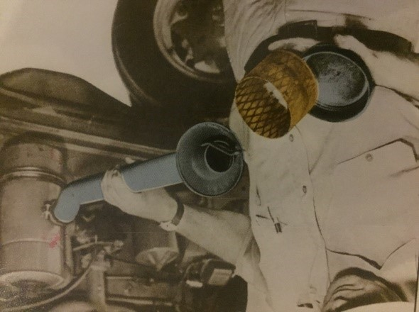
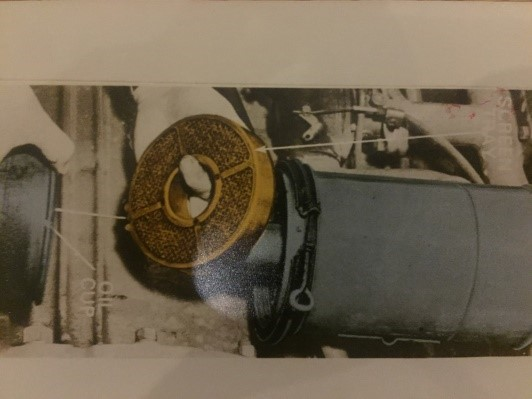

الصيانة الدورية بعد كل 50 ساعة
1-تشحيم اذرع الشبك و البنوز المحورية و روافع القيادة و التوجيه .
- يستخدم مشوارين من مسدس التشحيم .
- انظر الشكل الملحق .
2-تشحيم طلمبة الماء ووصلات عمود الفرامل .
- تشحم طلمبة الماء بمشوار واحد اما وصلات عمود الفرامل تشحم بمشوارين من مسدس التشحيم .
3-الكشف عن مستوى الزيت الهيدروليكي .
- عند الكشف عن مستوى الزيت يجب ان تكون اذرع الشبك مرفوعة .
- اضف الزيت الموصى به و بعد الاضافة يتم تشغيل الاجهزة الهيدروليكية عدة مرات للتأكد من خروج الهواء .
4-تشحيم مجموعة روافع ووصلات عمود القابض .
- يوضع هنا مشوارين من مسدس التشحيم .
- لاحظ الشكل الذي يوضح الأماكن التي يمكن تشحيمها .
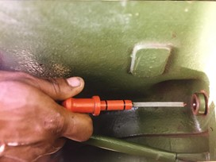
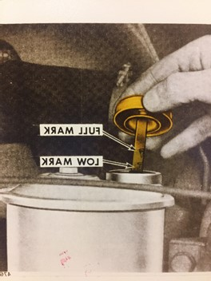
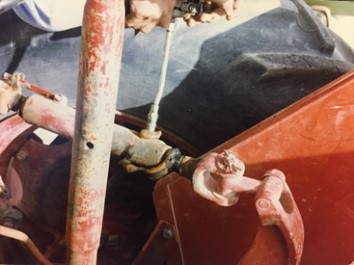
5-التأكسد من شد السيور .
- تأكد ان مفتاح التشغيل مغلق .
- قم بترخية مسمار التثبيت لمولد التيار بإستخدام رافعة كما بالشكل .
- اضغط على الرافعة حتى الضغط المناسب للسير ثم اربط مسمار التثبيت .
- يجرى تغيير السير في حالة وجود تشقق فيه .
الإرتخاء يكون مناسب حوالي 6-25 سم انظر الشكل الملحق .
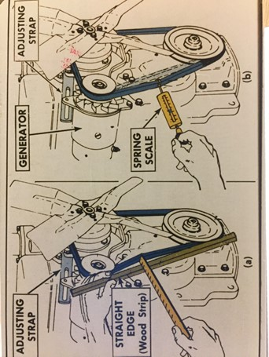
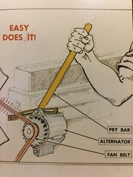
6-صيانة البطارية .
- راقب مستوى الماء وعند نقصه يضاف ماء مقطر .
- يجب ابعاد اي لهب عند فك اغطية البطارية خاصة عند الشحن .
- استخدام الهيدرومتر في حالة افقية (كما في الشكل ) و تكون البطارية جيدة اذا كانت القراءه (1,27)عند حرارة (27 م) ويعاد الشحن اذا انخفضت الى (1,25) و تصحح القراءه بإضافة او طرح ( 0,004)من قراءة الهيدرومتر لكل (5 م ) اعلى او اقل (على التوالي ) من 27 م .
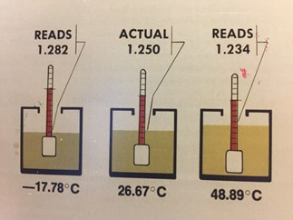
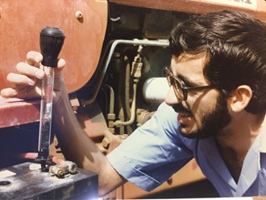
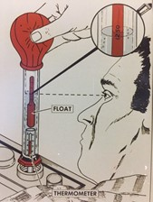
الصيانة الدورية بعد كل 100 ساعة
1-تزييت كراسي المولد و عمود الموزع و فتيلة عمود الكامات .
- عمود التوزيع و كراسي المولد :- تزييت ]8-10[نقط من زيت درجة 20
- فتيلة عمود الكامات :- تزيت (2) نقط من زيت درجة 10 .
2-الكشف عن مستوى الزيت في كراسي المحور الامامي للعجلات .
- يستخدم للمحور الامامي زيت من الزيت المستعمل في المحرك .
- اذا لم يكن مستوى الزيت على الحافة الدالة على صحة كمية الزيت يضاف زيت حتى تصل للمستوى المطلوب


3-تغيير زيت وفلتر المحرك .
- فرغ الزيت بعد ايقاف المحرك مباشرة و نظف السدادة من الشوائب العالقة بها و تاكد من سلامة الجوان .
- يتم اضافة الزيت حسب النوع و الكمية الموصى بها .
- يتم ادارة المحرك بعد الملء بالزيت لدقائق و يراجع المنسوب
- يتم فك الفلتر باستخدام الطريقة الملائمة و يراعى عدم ربط الفلتر اكثر من اللازم و تزيت حلقة الاحكام المطاطية بطبقة رقيقة من الزيت .
- لف الفلتر ( 0.75- 1.25 ) لفه ثم تاكد من عدم وجود تسرب .

4-ضبط مستوى زيت المقود و محلول البطارية .
- تاكد ان انابيب البطارية مغمورة بالسائل تماما .
- تاكد ان زيت المقود عند الحد المناسب .
5- تزييت المارش وروافع القابض
6-صيانة اطارات الجرار .
- تاكد من عدم وجود تشققات او تآكل او احجار او مسامير بالاطار .
- يضاف الماء الى الاطار لزيادة مقدرته على الجر .
- قلت الضغط يسبب تآكل جوانب الاطار و كسر البروزات .
- زيادة الضغط تسبب تفسخ الاطار و تآكل في منتصفه .

الصيانة الدورية بعد كل 250 ساعة
1-تاكد من اجراء الصيانة للساعات السابقة .
2-ضبط الكاربورتير في محركات الاشتعال بالشرارة .
3-صيانة شمعات الاحتراق لمحركات الاشتعال بالشرارة .
4-ضبط قابض المحرك :-
- راجع الخلوص المسموح به في الكتالوج و عادة يكون بين (2-3)سم .
- يجب استبدال بطائن القابض باخرى جديدة عند اللزوم .
- عند تلف
- تطويل الخلوص اكثر من اللازم يؤدي الى صعوبة تعضيق صندوق التروس . راجع الاشكال الملحقة .


5-تنظيف البطارية . (انظر الاشكال الملحقة )
- انزع الكابل السالب اولا ثم الموجب . كما بالشكل .
- نظف (اصبع) البطارية بواسطة فرشاة حديدية او الاصبع المخصص .
- استخدم فرشاة ناعمة لتنظيف سطح البطارية باستخدام الماء .
- استخدم محلول الصودا لغسل سطح البطارية .
- ثم اغسل البطارية بالماء و جففها ثم اعدها للجوار .
- ضع كمية قليلة من الشحم على كل كابل و على الاقطار .


6-ضبط الفرامل . (انظر الاشكال الملحقة )
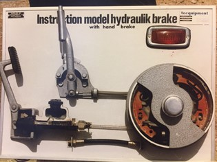
الصيانة الدورية بعد كل 500 ساعة
1-ضبط توقيت الاشتعال .
- استخدم جهاز الضبط المضيئ عند سرعة اللاحمل او عند اقصى سرعة عند اللاحمل حسب الكتالوج .
- فك جزئيا نقطة تثبيت الموزع ثم ادر جسم الموزع برفق حتى تتقابل علامة الضبط مع النقطة الثابتة المحددة للدرجة التي ينصح بها المنتج .
- اربط نقطة تثبيت الموزع و
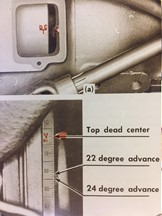
2-تغيير مرشحات الوقود لمحركات الديزل
- اغلق محبس خزان الوقود عند تغيير المرشحات .
- تاكد من خروج فقاعات الهواء من دورة الوقود و تتم بفتح صمام تنفيس الهواء العلوي وفتح محبس خزان الوقود و تحريك ذراع الضخ لطلمبة التحضير لدفع الوقود داخل المرشح حتى يخرج الهواء من المسمار العلوي .
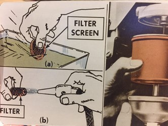
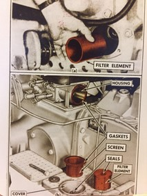
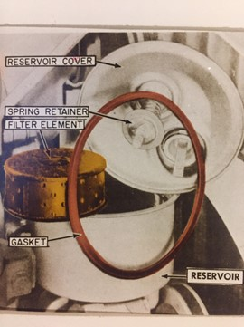
3- صيانة كراسي العجلات الامامية .
- تغسل الكراسي بالديزل او الكيروسين و باستخدام فرشاة ناعمة لازالة الشحوم القديمة (كما بالشكل )
- جفف الكراسي (رمان بيلي) باستخدام قطعة من القماش النظيف او الهواء المضغوط .
- اختبر اذا كان هناك تآكل في الكراسي و تستبدل التالفة .
- اغسل الجنط (الاطار المعدني للعجل)
- املاء الكرسي بالشحم من النوع الموصى به .
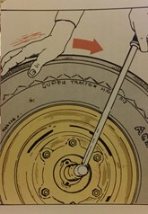
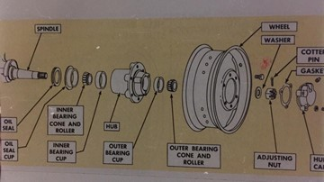
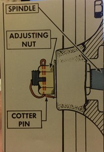
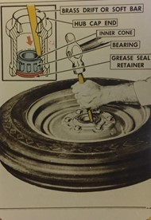
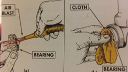
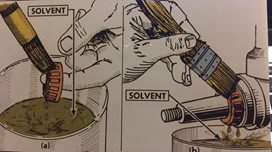
4- صيانة طلمبة الحقن .
- تاكد من سلامة جوان الغطاء واذا لزم الامر يستبدل .
- يجب غسل جميع اجزاء الطلمبة بالديزل لازالة الاوساخ و الاتربة .
- يجب الربط على غطاء الطلمبة للتاكد من عدم ترسب الوقود كما يجب ترك ذراع الضخ عند اوطى نقطة من شوطه .
5-فحص سرعة دوران المحرك .
- راجع السرعة الدورانية الموصى بها .
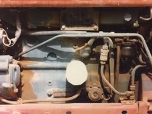
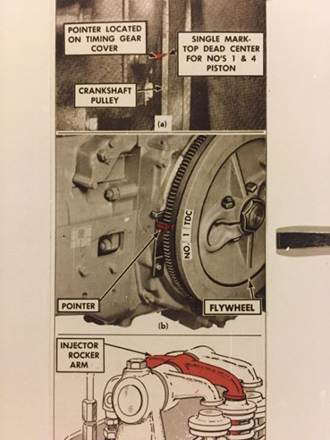
6-صيانة جهاز التبريد .
- عند اسنخدام المواد المنظفة في المشع لا تغلق فتحة الملء.
- عدم اضافة او تفريغ الماء من المشع وهو ساخن لتجنب حدوث شرخ بالمحرك .
- يجب عدم اضافة مواد مانعة للصدأ الا بعد تنظيف المحرك بالمواد المنظفة .
- يضاف مع سائل التبريد مواد ضد التجمد لصدأ حسب ما هو موصى به .
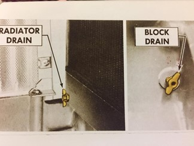
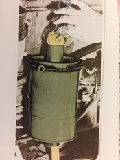
الصيانة الدورية بعد الف ساعة تشغيل
1-صيانة و تغيير زيت كراسي التحميل للعجلات الامامية .
2-تبديل زيت كراسي التحميل للعجلات الامامية .
3-صيانة وتغيير زيت الجهاز الهيدروليكي .
- دع اذرع الشبك في اوطى نقطة لها .
- فك الصامولة وفرغ الزيت ثم ادر المحرك قليلا للتخلص من الكمية المتبقية داخل المضخة ثم استبدل المرشح ثم اعد ربط الصامولة .
- املأ الخزان بالزيت الهيدروليكي الموصى به .
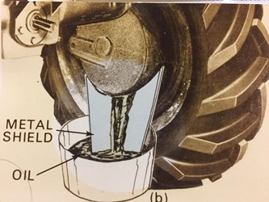
4- صيانة و تغيير زيت صندوق التروس .
5-اعداد الجرار للتخزين .
- نظف الجرار ككل ثم جففه .
- املأ خزان الوقود تماما .
- اضف مانع الصدأ لزيت المحرك و زيت التوجيه مع احكام سد الفتحات و التاكد من عدم وجود ترسيب .
- يحفظ الجرار تحت مظلة و يراعي عند اعادة تشغيله ان المكان جيد التهوية لكي لا يسبب اختناق السائق .
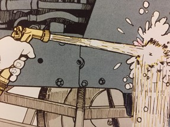
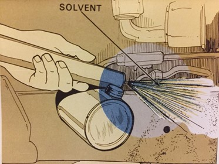